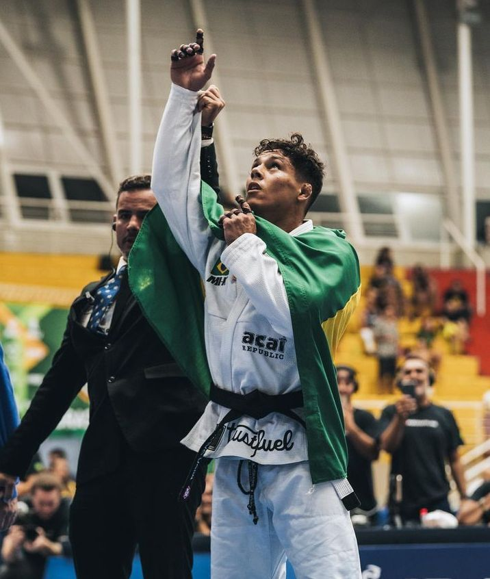

O jiu-jítsu é um esporte de combate e uma arte marcial que foi desenvolvida no Japão. Trata-se de uma luta em que o atleta tenta controlar o adversário com golpes, até conseguir imobilizá-lo, usando técnicas de torção ou estrangulamento, que finalizam o combate.
O jiu-jítsu brasileiro (Brazilian jiu-jítsu) é um estilo de jiu-jítsu muito respeitado e que tem vários atletas no mundo. Em 1915, o mestre de artes marciais Conde Koma, chegou a Belém do Pará. Em Belém, abriu uma escola de jiu-jítsu, onde deu aulas a Carlos Gracie, filho de um empresário que tinha ajudado Conde Koma em sua mudança para o Brasil.
